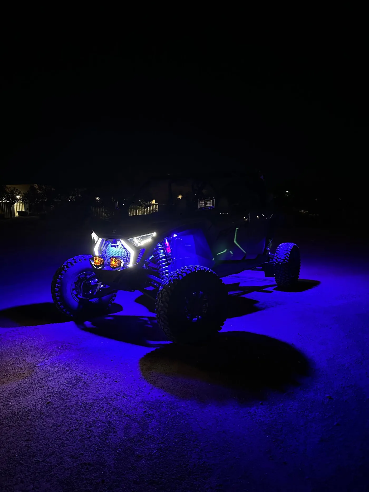
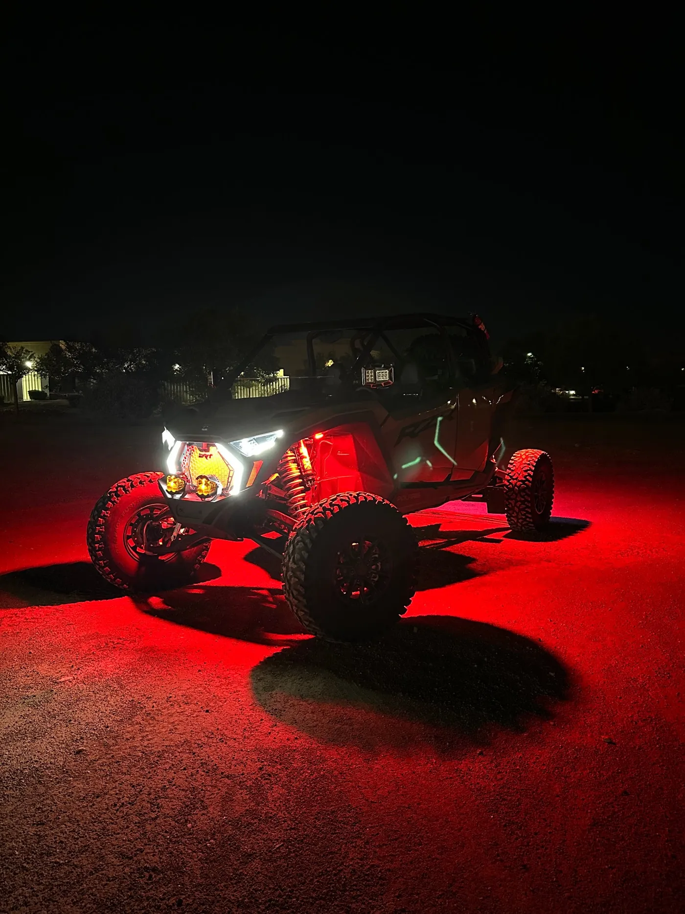
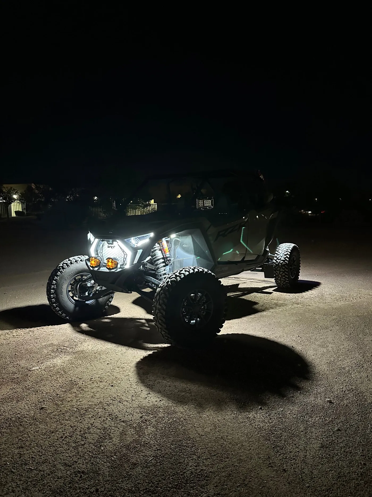

Plug And Play
RGBW Rock Light Kit
- 44 LED Chip
- RGBW
- Bluetooth App
$205 4 lights






Side-By-Sides And UTVs · Mesa, AZ
Whether you call it a side-by-side, a UTV or an SxS, side-by-sides and trucks are what we focus on at our Mesa shop. We light RZRs, Can-Ams and the rest with the same rock lights we put on trucks: RGBW color, pure white and white-and-amber switchback. Order the kit, or drop it off and pick it up lit.
A side-by-side sits high on long-travel suspension, with nothing but open frame between the tires. That's what makes rock lights work so well on one. Mounted under the frame and in the wheel wells, they light the ground right around the machine, which is where you're looking when you crawl over rock, pick a line in a wash or load up in a dark staging area.
They're also the reason a lit RZR stands out at a night ride. The same light that shows you the trail puts a glow under the whole machine.
These photos are one side-by-side running our RGBW kit. The 44-chip light does red, green, blue and a true white, and you switch from your phone with the Bluetooth app or the remote. Run color at the staging area and the white channel on the drive out.
It's full plug and play with the module, remote and app, it's waterproof, and it comes in kits of 4 to 20 lights.
$205 4 lights
If you ride more than you show, pure white is the work light. Our 72 and 84-chip packs come in fours, and the 219-chip kit is plug and play by count. The black RZR below runs white rock lights.
The switchback kit runs white or amber from the same light. Amber is easier to see through dust than white, and it's easier on the riders behind you.

$55 pack of 4

$600 16 lights
A side-by-side has less frame to cover than a crew cab pickup, so it takes fewer lights for the same even glow.
| Lights | Where They Go | Good For |
|---|---|---|
| 4 | One in each wheel well | Lighting the ground at each tire |
| 8 | Wheel wells, plus two down each side | An even glow under the whole machine |
| 12 | Wheel wells, sides, plus front and rear | Full coverage on a four-seater |
Starting points, not rules. Long-wheelbase four-seaters take more. Send a photo when you book and we'll lay it out for your machine.
Side-by-side frames are tube and plate, with skid plates and suspension arms close together. We mount where the light has a clear shot at the ground and stays out of the way of the suspension travel and the rocks.

$10 each
Our wheel light rings are 17 inches, sized for truck wheels. Most side-by-sides run smaller wheels, so rock lights in the wheel wells are usually the better way to light them. If your machine has big aftermarket wheels, pick your wheel size when you book and the form tells you if our rings might fit. See wheel lights for the details.
If your side-by-side is street legal and plated in Arizona, the same lighting rules apply on the road as on a truck. White and amber are fine facing forward. Red or blue visible from the front isn't allowed on a highway, and flashing modes are for when you're parked. The plain-English summary of A.R.S. 28-947 is on our rock lights page.
Yes. Our lights mount on any side-by-side with a frame to mount to, including Polaris RZR, Can-Am, Honda Talon and Kawasaki Teryx models. Tell us your year, make and model when you book.
Nothing, for lighting. UTV, side-by-side and SxS are names for the same kind of machine, and they all take the same rock lights.
Four, one per wheel well, lights the ground at each tire. Eight adds the sides for an even glow under the whole machine. Four-seaters can take 12 or more.
Yes. Our RGBW and switchback kits are waterproof, and every splice we make on an install is heat-sealed against water, mud and the pressure washer.
Yes. The RGBW and switchback kits are plug and play with a module, remote and app. The 72 and 84-chip packs are DIY wiring.
Usually not. Our rings are 17 inches, and most side-by-side wheels are smaller. Rock lights in the wheel wells are the usual answer.
Installs In Mesa
Bring our kit or your own lights. We text you to confirm your drop-off and quote.
Other Services ITM Offers